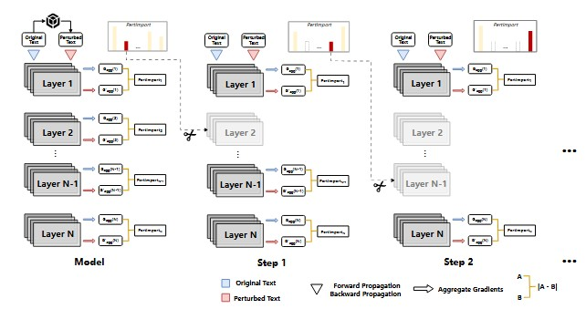

|
Wei-Jie Xu Currently I am a master student of School of Artificial Intelligence in Nanjing University and a member of LAMDA group, led by Prof. Zhihua Zhou. In June 2024, I received my B.Eng. degree from School of Computer Science and Technology, Soochow University. In the same year, I was admitted to study for a master's degree in School of Artificial Intelligence, Nanjing University under the supervision of Prof. Kai Ming Ting. |

|
ResearchCurrently, I'm interested in Machine Learning and Data Mining, especially in anomaly detection and clustering. And I'm also interested in Large Language Models. |
|
 |
PIP: Perturbation-based Iterative Pruning for Large Language Models
Yi Cao, Wei-Jie Xu, Yucheng Shen, Weijie Shi, Chi-Min Chan and Jiajie Xu Nov.2024-Jan.2025 arXiv:2501.15278 The rapid increase in the parameter counts of Large Language Models (LLMs), reaching billions or even trillions, presents significant challenges for their practical deployment, particularly in resourceconstrained environments. To ease this issue, we propose PIP (Perturbation-based Iterative Pruning), a novel double-view structured pruning method to optimize LLMs, which combines information from two different views: the unperturbed view and the perturbed view. With the calculation of gradient differences, PIP iteratively prunes those that struggle to distinguish between these two views. |
News |
Project |

|
MindSpore code migration - Memorize, factorize, or be naive: Learning optimal feature interaction methods for CTR Prediction
Wei-Jie Xu*, Runzhi Yang*, Yuxuan Yang* and Juntao Li |
Award
|
Service
|